Software networkⅠ ： YouTube movie Report
6/5（水曜）の授業では[Adobe Premiere]というクリエイティブソフトを使って映像編集をおこなった！
私はレストランにディナーを食べに行った時、最上階から見える景色をタイムラプスで記録した映像を素材にして編集をおこなった。
映像を見せたい部分だけにトリミングする。（シーケンスの中で、動画の長さを調整）
●テキストを挿入
テキストスタイルの変更する
（シャドウの透明度、角度、影の種類を選択・調整する。）
●画像の挿入、編集
「スケール」：画像の拡大と縮小
表示される「タイムライン」（線）と移動区間を示す「キーフレーム」に注目する。
移動さたい時間長さの間隔を決める。（キーフレームを左右に動かして調整）
（開始＝７０ / 終了＝１００）
●BGMの挿入
シーケンスの中で、音量の設定を行う。
「エフェクト」から「オーディオとランディション」を選択。
その中の「指数フェード」を選択し、素の音声データの先頭と終わりにドラッグする。
（動画の両端に収まるように置く。）
●YouTubeへの書き出し、アップロード
→[Media Encoder CC]が起動。
公開形式は[H.264]に、「プリセットブラウザー」から[YouTube 1080HD]を選択し、そのまま動画ファイルに「ドラック&ドロップ」する。
動画の書き出しが済んだら、YouTubeに動画をアップロードして作業完了！
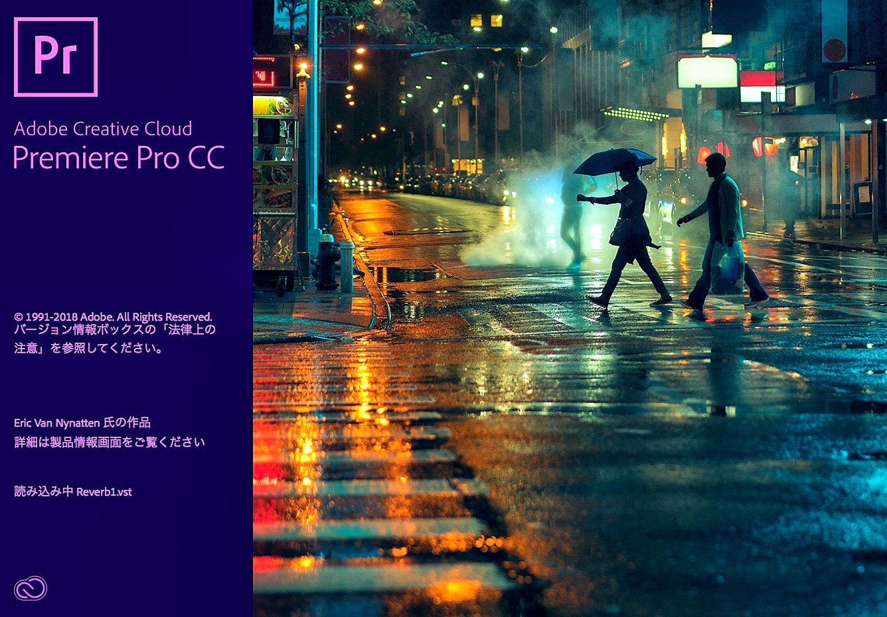
それぞれ自由なテーマを決め、映像編集の工程・過程をレポートにまとめた。
Before.
After.
＜作業工程1＞
Adobe Premiereを開き、編集したい映像を「ドラック&ドロップ」又は、ファイルから開く。
＜作業工程2＞
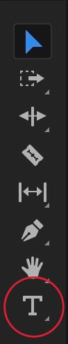
ツールバーの[T]を選択し、動画内にテキストを書き込む。→ シーケンスの中で、テキストの間隔を選択
●テキストの編集・加工
テキストの指定文字をテキストフィルターから選択。（他、Typekitからダウンロードして文字を新しく追加できる。）
●テキストの色を編集。
[Lumetriカラー]・マスターグラフィックの基本補正で編集。
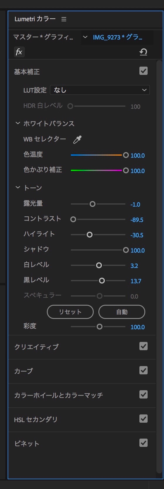
テキストに影・立体感をつける（今回はドロップシャドウ）
テキスト設定欄の下、「アピアランす」で「シャドウ」の追加を選択。
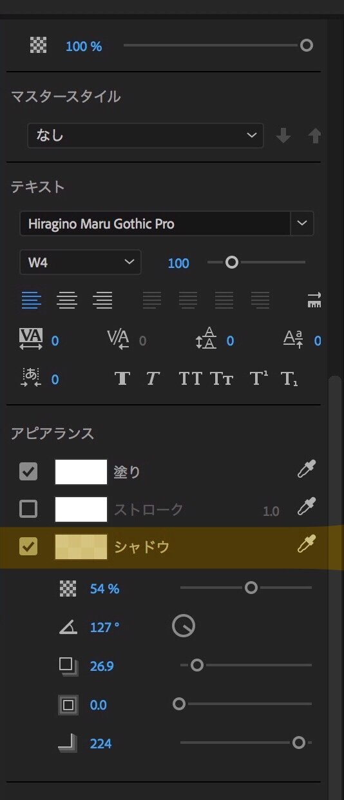
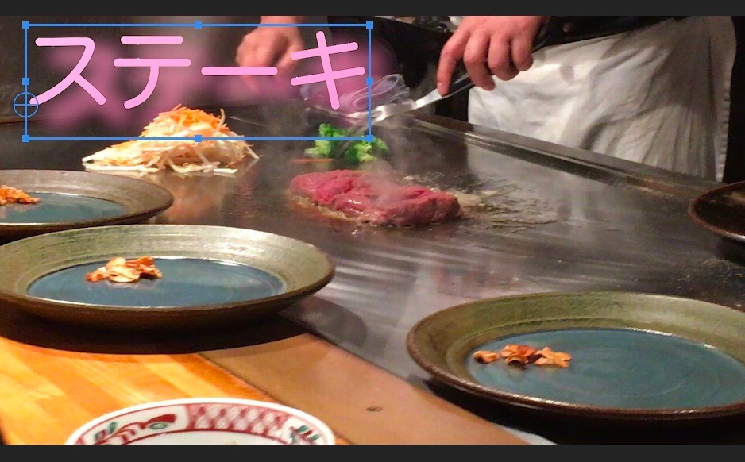
その他、選択ツールでテキストの位置、拡大・縮小など。
＜作業工程3＞
動画を入れた時と同様に画像ファイルを「ドラック&ドロップ」又は、ファイルから開いて入れる。
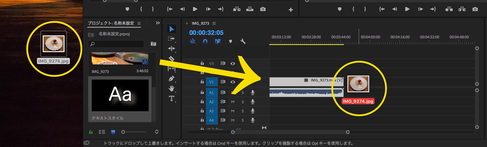
画像位置と大きさの調整。
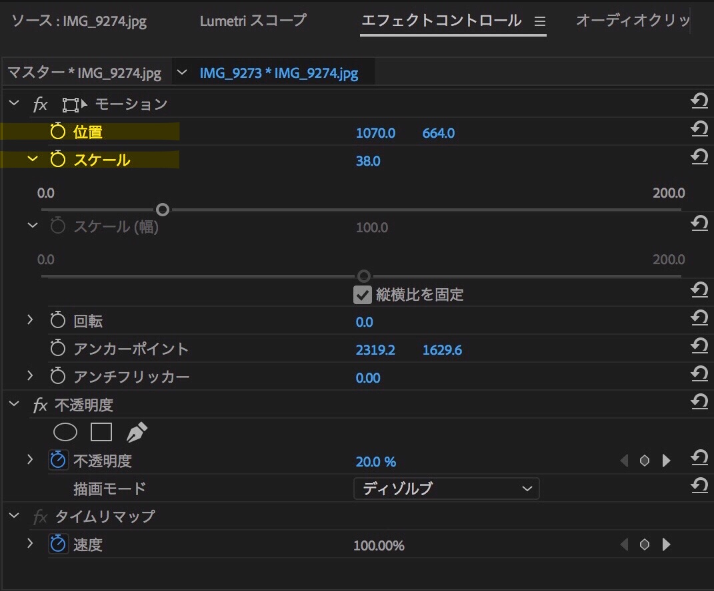
エフェクトコントロール
「位置」：固定画面に対する画像の相対的な位置を調整。
●画像の拡大アニメーション
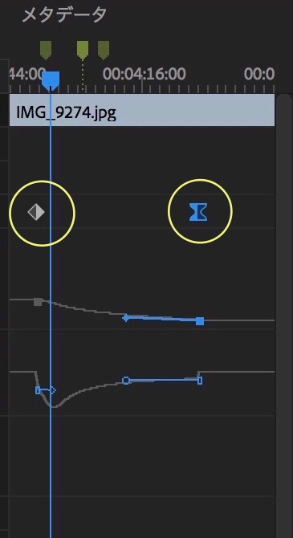
「スケール」をダブルクリックで選択。
キーフレームの開始と終了の２つにそれぞれスケール値を入力する。
画像の縮小はこれと逆のことを行う。（終了の値を開始の値より小さく設定する。）
他にも「回転」、「透明度」、「位置」の設定があるが、「キーフレーム」の設定方法は上に同じ。
＜作業工程4＞
音楽ファイルを「ドラック&ドロップ」又は、ファイルから開いて入れる。
●BGMの編集（フェードインとフェードアウト）
フェードイン、フェードアウトさせたい音声データを選択。
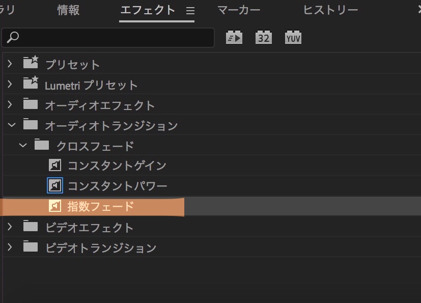
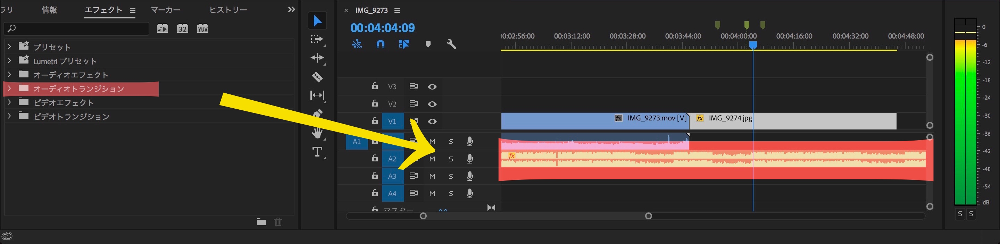
＜作業工程5＞
ファイルから「書き出し」→「メディア」をクリック。
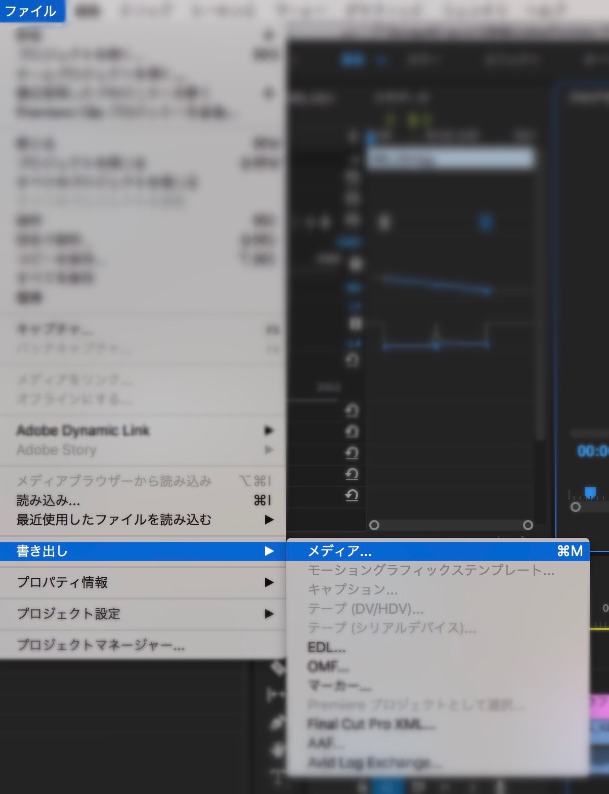
動画の公開設定画面の右下にある「キュー」をクリック。
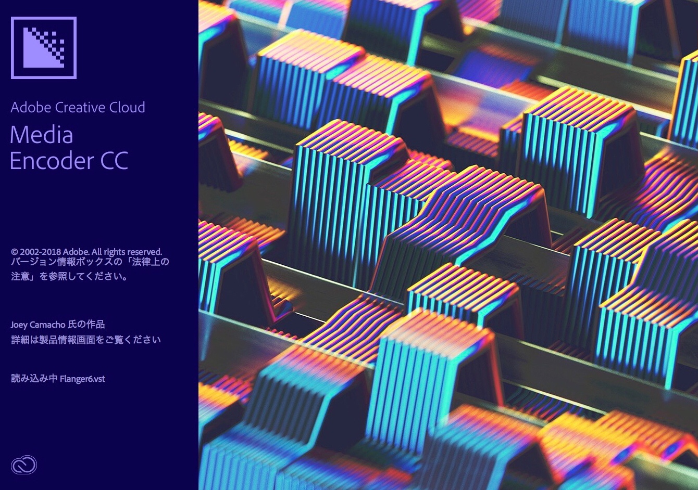
公開形式を選択。
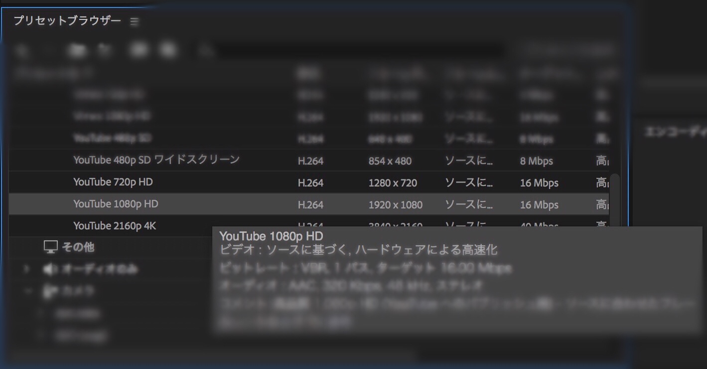
緑の三角ボタンを押して、YouTubeへの書き出し開始！
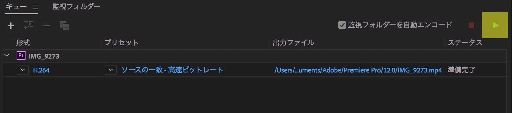
-------------------------------------------------------------------------------------------------------------------------------------------------------------------